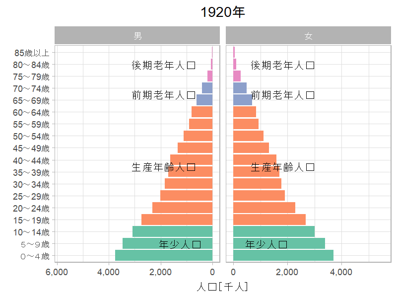

library(tidyverse)
library(jpstat)この記事について
国立社会保障・人口問題研究所（社人研）の公開している人口ピラミッドの推移アニメーションを参考に，以下のようなアニメーションをRのggplot2で作成してみました．

国勢調査の時系列データの取得
まず，e-Statで公開されている国勢調査の男女・5最階級別人口の時系列データをRのjpstatパッケージを用いて取得します．
jpstatパッケージからe-Stat APIを用いるためには，アプリケーションID（appId）を取得する必要があります．
# ご自身のappIdに置き換えてください
Sys.setenv(ESTAT_API_KEY = "Your appId")census <- estat(statsDataId = "https://www.e-stat.go.jp/dbview?sid=0003410380")
pop <- census |>
activate(tab) |>
filter(name == "人口") |>
select() |>
# 性別の抽出
activate(cat01) |>
rekey("sex") |>
filter(name %in% c("男", "女")) |>
select(name) |>
# 年齢階級の抽出
activate(cat02) |>
rekey("ageclass") |>
filter(str_detect(name, "^\\d+～\\d+歳$") |
name == "85歳以上" |
name == "110歳以上") |>
select(name) |>
# 年の抽出
activate(time) |>
rekey("year") |>
filter(str_detect(name, "^\\d+年$")) |>
select(name) |>
# e-Statデータの取得
collect(n = "pop") |>
rename_with(~ .x |>
str_remove("_name$")) |>
mutate(sex = as_factor(sex),
year = parse_number(year),
# 各年齢階級の最低年齢を取得
age_from = ageclass |>
str_extract("^\\d+") |>
stringi::stri_trans_nfkc() |>
as.integer(),
# 最高の年齢階級を「85歳以上」とする
ageclass = case_when(age_from >= 85 ~ "85歳以上",
TRUE ~ ageclass) |>
as_factor(),
# 年齢層を追加
agegroup = case_when(between(age_from, 0, 10) ~ "年少人口",
between(age_from, 15, 60) ~ "生産年齢人口",
between(age_from, 65, 70) ~ "前期老年人口",
age_from >= 75 ~ "後期老年人口") |>
as_factor(),
pop = parse_number(pop)) |>
# 「85歳以上」人口を集計
group_by(year, sex, ageclass, agegroup) |>
summarise(pop = sum(pop),
.groups = "drop")The total number of data is 796.knitr::kable(head(pop))| year | sex | ageclass | agegroup | pop |
|---|---|---|---|---|
| 1920 | 男 | ０～４歳 | 年少人口 | 3752627 |
| 1920 | 男 | ５～９歳 | 年少人口 | 3467156 |
| 1920 | 男 | 10～14歳 | 年少人口 | 3089225 |
| 1920 | 男 | 15～19歳 | 生産年齢人口 | 2749022 |
| 1920 | 男 | 20～24歳 | 生産年齢人口 | 2316479 |
| 1920 | 男 | 25～29歳 | 生産年齢人口 | 2008005 |
人口ピラミッドアニメーションの作成
Rのgganimateパッケージを用いることでggplot2のグラフをアニメーションにすることができます．
library(gganimate)Warning: package 'gganimate' was built under R version 4.3.1# 年齢層を表示するためのデータ
agegroup <- pop |>
group_by(sex, agegroup) |>
summarise(ageclass = mean(as.integer(ageclass)),
.groups = "drop") |>
mutate(hjust = case_when(sex == "男" ~ 1.25,
sex == "女" ~ -0.25))
poppyramid <- pop |>
# 人口ピラミッドを作成するため男性人口をマイナスに変換
mutate(pop = if_else(sex == "男", -pop, pop)) |>
ggplot(aes(ageclass, pop,
group = sex,
fill = agegroup)) +
geom_col(show.legend = FALSE) +
geom_text(data = agegroup,
aes(label = agegroup,
hjust = hjust),
y = 0) +
scale_x_discrete(NULL) +
scale_y_continuous("人口［千人］",
# ラベルを絶対値・千人単位に変換
labels = purrr::compose(scales::label_comma(scale = 1e-3), abs)) +
scale_fill_brewer(palette = "Set2") +
coord_flip() +
facet_wrap(~ sex,
scales = "free_x") +
labs(title = "{frame_time %/% 5 * 5}年") +
theme(plot.title = element_text(hjust = 0.5)) +
# アニメーションに変換
transition_time(year)
# 幅・高さを変更
animate(poppyramid,
width = 800,
height = 600,
res = 150,
renderer = gifski_renderer())